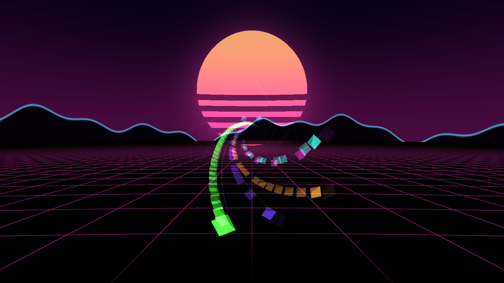
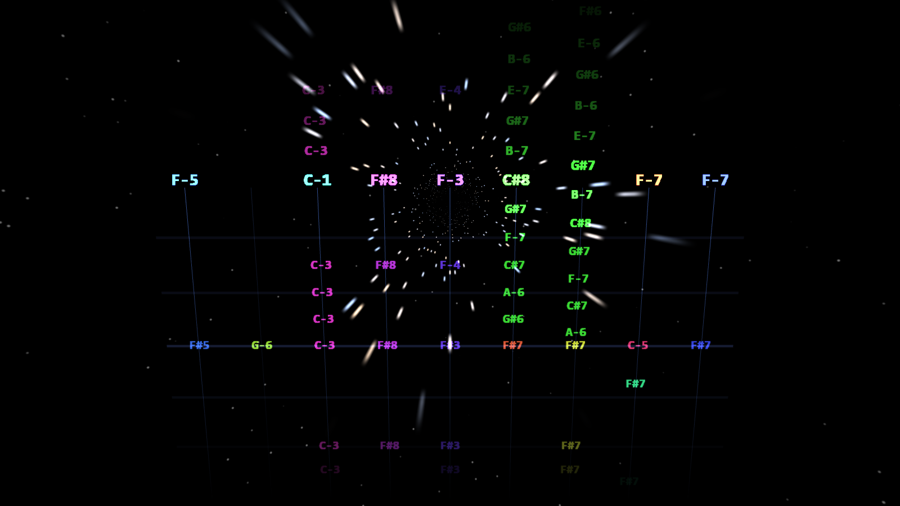
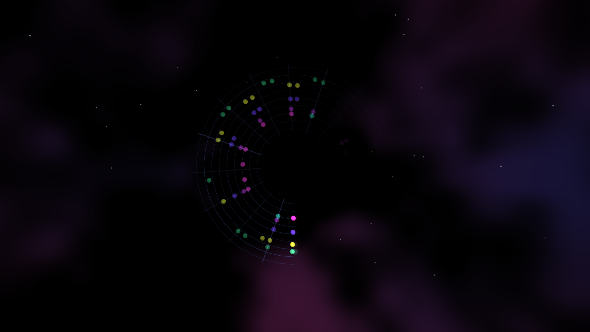
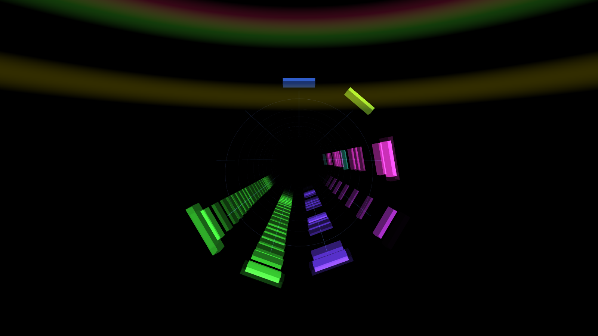
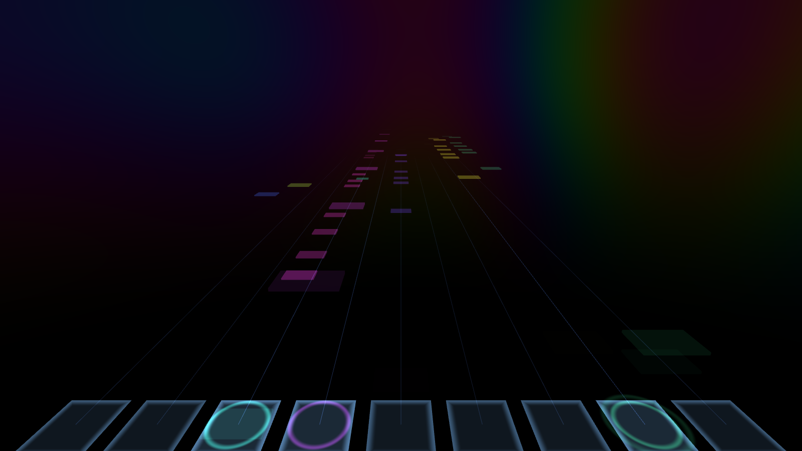
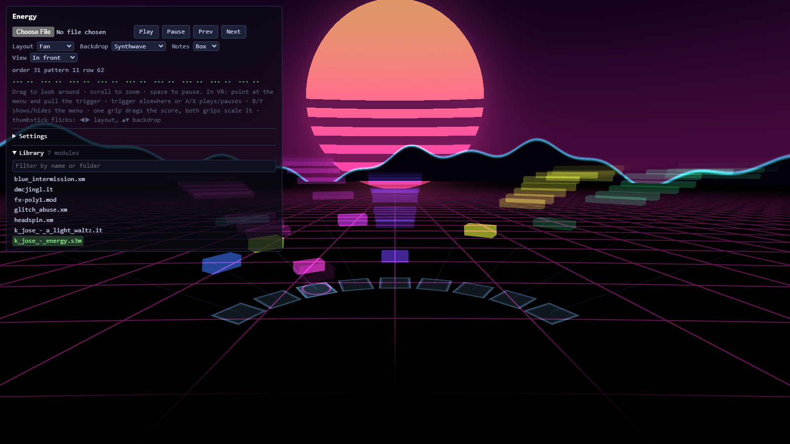
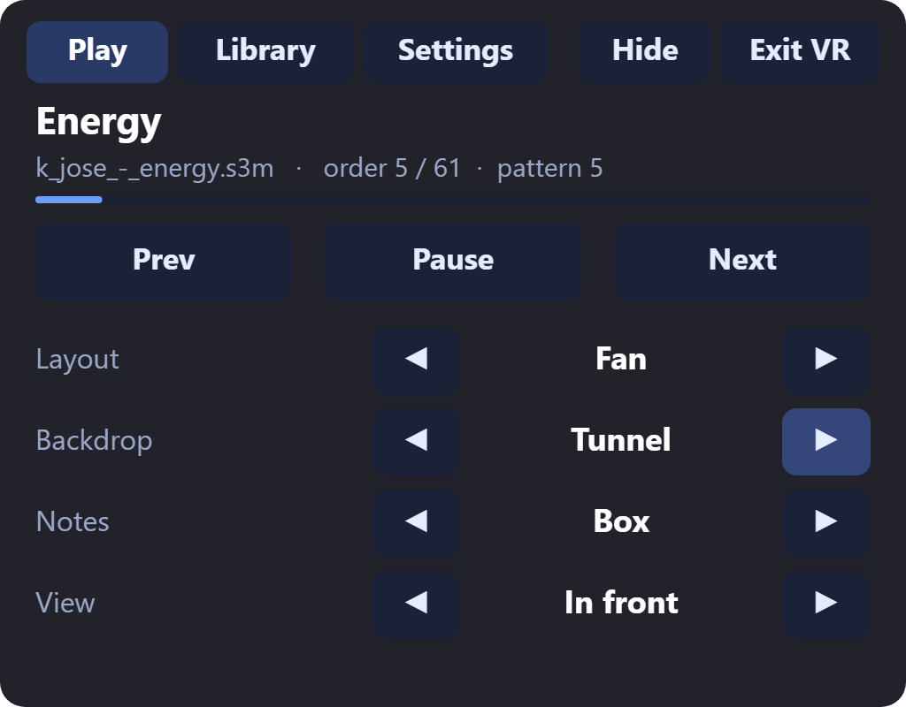
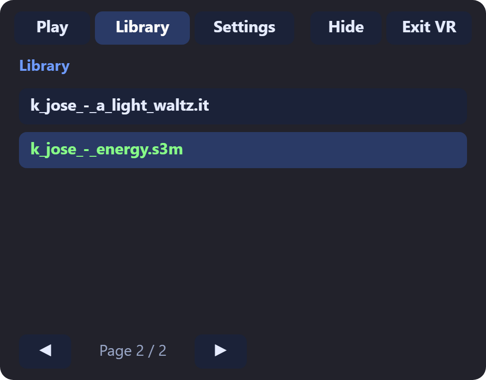

Why
Music visualizers hear the mix. A tracker module carries its score: the patterns, rows and channels, every note and instrument, known before it plays.
MOD, S3M, XM and IT files, the music of the Amiga and PC demoscene, are small programs of notes and samples. Demos synced their effects to the tracker's rows. SyncTracker turns that around and builds the scene from the score itself, so the visuals can show what is coming, not only react to what was loud. In VR the score surrounds you or sits in front of you like a stage.
Looks
Six layouts, eight backdrops and five note shapes, in any combination. Notes rise with pitch, take their colour from the instrument and their thickness from the volume, and flash on a pad as they play.






Layouts
- Fan
- Highway
- Wheel
- Tube
- Vortex
- Tracker
Backdrops
- Tunnel
- Starfield
- Synthwave
- Kaleidoscope
- Nebula
- Plasma
- Copper bars
- None
Notes
- Box
- Gem
- Ball
- Tile
- Text
In VR
Open the player in the Quest browser (or any WebXR browser) and press Enter VR. A menu floats at waist height; point a controller at it and pull the trigger.


- Trigger on the menu presses a button; anywhere else it plays and pauses.
- A/X plays and pauses, B/Y shows and hides the menu.
- Thumbstick flicks step through layouts (left/right) and backdrops (up/down).
- One grip held: drag the score up, down, closer or away.
- Both grips: pull your hands apart or together to scale it.
- Everything else is under Settings: distances, row spacing, backdrop fade and brightness, audio offset for sync by eye, FPS display.
Try it
The player comes with seven CC0 demo tracks in its library. You can also choose or drop your own module file, or load one by URL with player/?mod=<url>. Nothing is uploaded: the music plays in your browser. Choices and settings are remembered per browser.
To use your own collection, serve the repository yourself (any static HTTPS server; localhost is fine on the desktop), put modules in mods/, in folders if you like, and run python tools/index-mods.py to index them.
How it works
Playback
libopenmpt, compiled to WebAssembly by chiptune3, plays the module on an AudioWorklet and hands over the whole score when it loads.
The song as played
The app works out the sequence of rows the song will actually play, following position jumps, pattern breaks and pattern loops, so the score can be shown ahead of the music. A test renders modules at full speed in Node and checks every played row against it: 148 modules match row for row.
In sync
libopenmpt reports where it is rendering; what you hear comes later by the audio output latency. The play head is the render position minus that latency, smoothed between row changes, with an offset setting for fine-tuning by eye.
On the GPU
Every note is in one instanced mesh built once per song. The vertex shaders place it from a single play-head value, and each layout is one short GLSL function. A frame uploads no buffers or textures, so it stays smooth in a headset.
Credits
The demo tracks are released under CC0 by their authors on The Mod Archive:
| Title | Artist | File |
|---|---|---|
| Energy | K. Jose | k_jose_-_energy.s3m |
| A Light Waltz | K. Jose | k_jose_-_a_light_waltz.it |
| FX-POLY1 | k0wax | fx-poly1.mod |
| Blue Intermission | congusbongus | blue_intermission.xm |
| Headspin | congusbongus | headspin.xm |
| Jingle Bells | DrMcCoy | dmcjingl.it |
| glitch_abuse | usrfriendly | glitch_abuse.xm |
Built on chiptune3 (MIT), libopenmpt (BSD) and three.js (MIT). SyncTracker itself is MIT licensed.